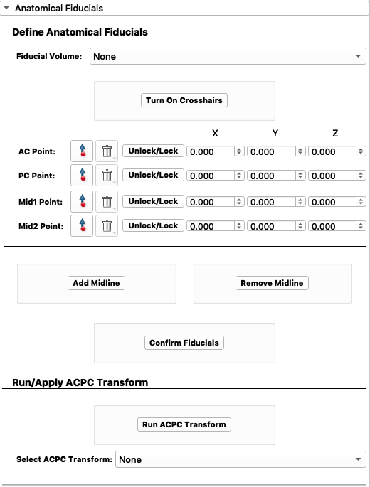

4. Anatomical Fiducials¶
We can now define the anatomical fiducials.
Select
3D T1 WeightedasFiducial Volume.Place the AC, PC, and Mid Points on the scan. First click
Turn On Crosshairs. SelectAC Pointand
We can now define the anatomical fiducials.
Select 3D T1 Weighted as Fiducial Volume.
Place the AC, PC, and Mid Points on the scan. First click Turn On Crosshairs.
Select AC Point and